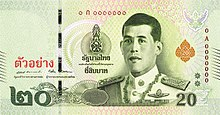
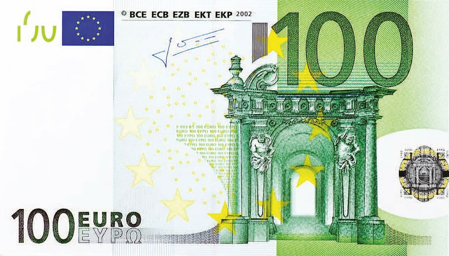
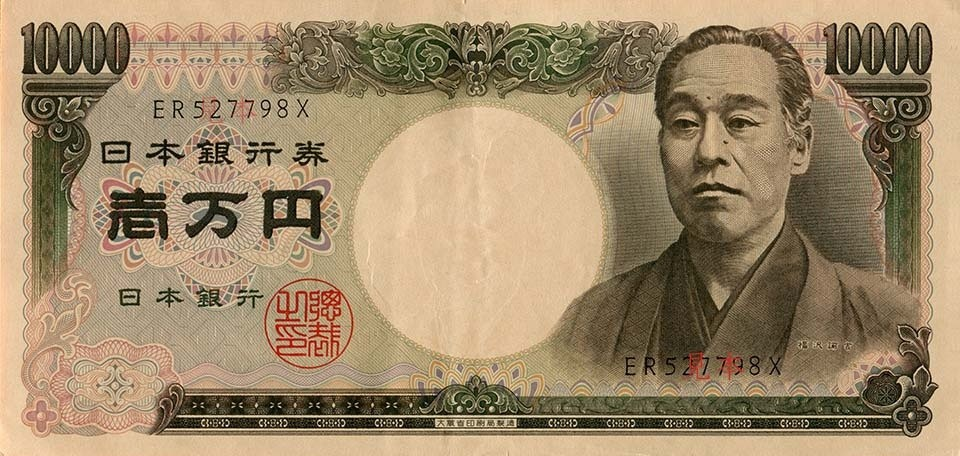

"ธนบัตร"
ความหมายของธนบัตร
ธนบัตร เป็นสิ่งที่เป็นตัวแทนในการแลกเปลี่ยน ซึ่งสามารถใช้ชำระหนี้ได้ตามกฎหมาย ธนบัตรจะใช้ควบคู่ไปกับเหรียญกษาปณ์
แต่โดยทั่วไปแล้วธนบัตรมักใช้สำหรับเงินจำนวนมาก ส่วนเหรียญกษาปณ์ใช้กับเงินจำนวนน้อย หรือเศษสตางค์
| ชื่อกับสกุลเงิน |
ลักษณะเฉพาะของธนบัตร |
| เงินบาท(Baht) |
 |
| เงินดอลลาร์(Dollar) |
 |
| เงินยูโร(Euro) |
 |
| เงินเยน(Yen) |
 |
เกร็ดความรู้ของการดูธนบัตร 20 บาท
มีลักษณะโดยรวมเหมือนกับธนบัตรกระดาษชนิดราคา 20 บาท ที่หมุนเวียนอยู่ในปัจจุบัน โดยมีการใช้เทคโนโลยีต่อต้านการปลอมแปลงที่ทันสมัย และมีมาตรฐานขั้นสูงเช่นเดียวกับธนบัตรกระดาษ